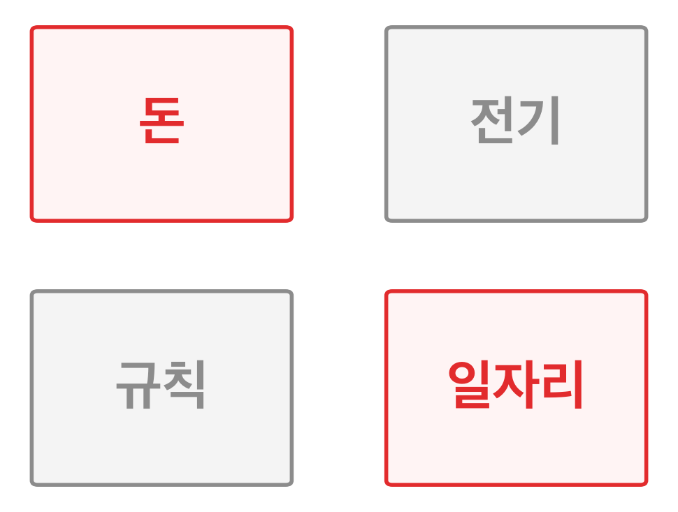
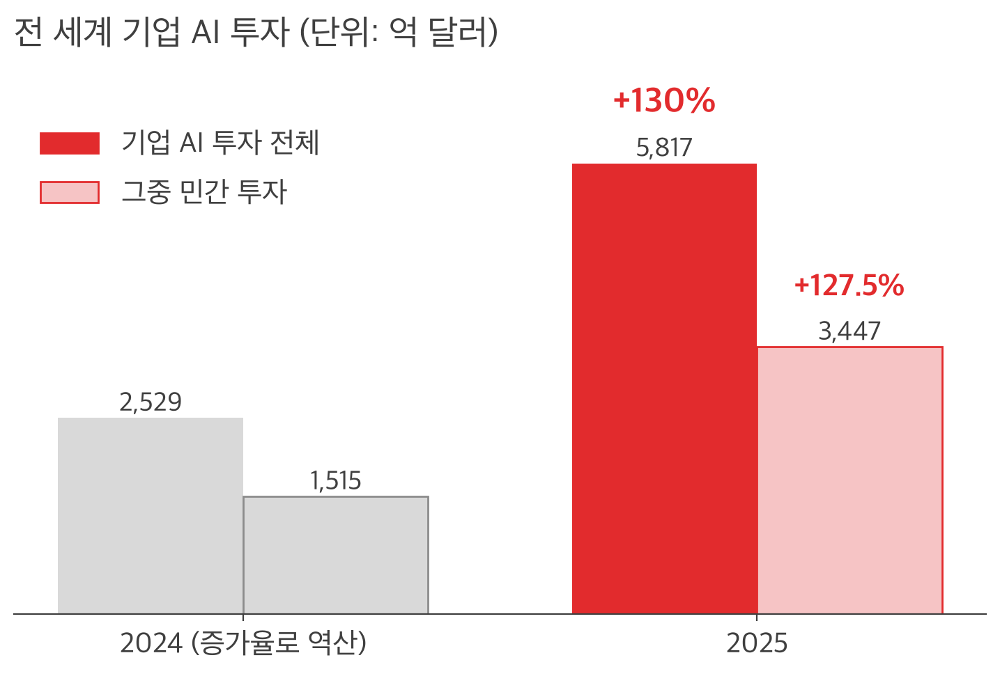
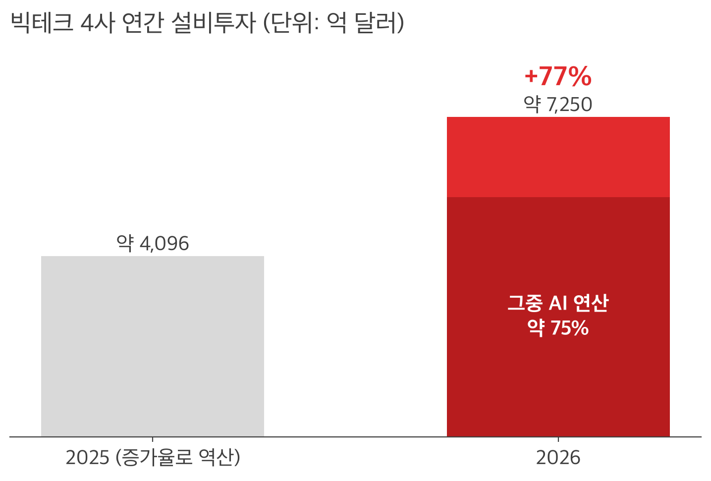
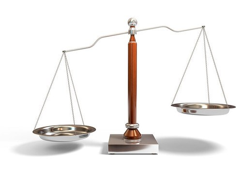
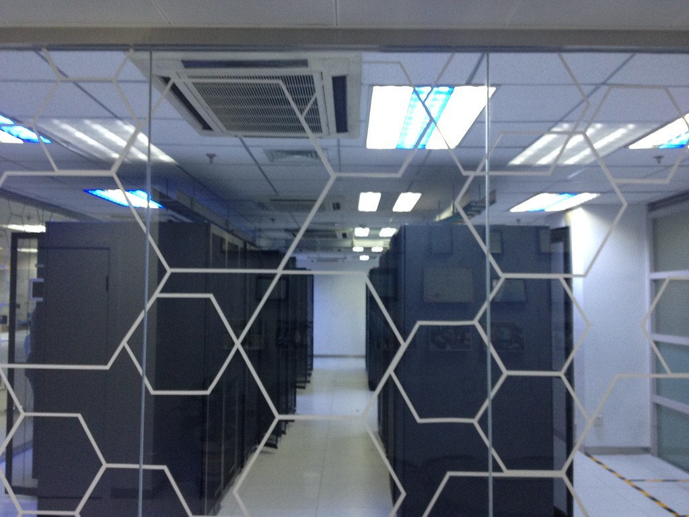
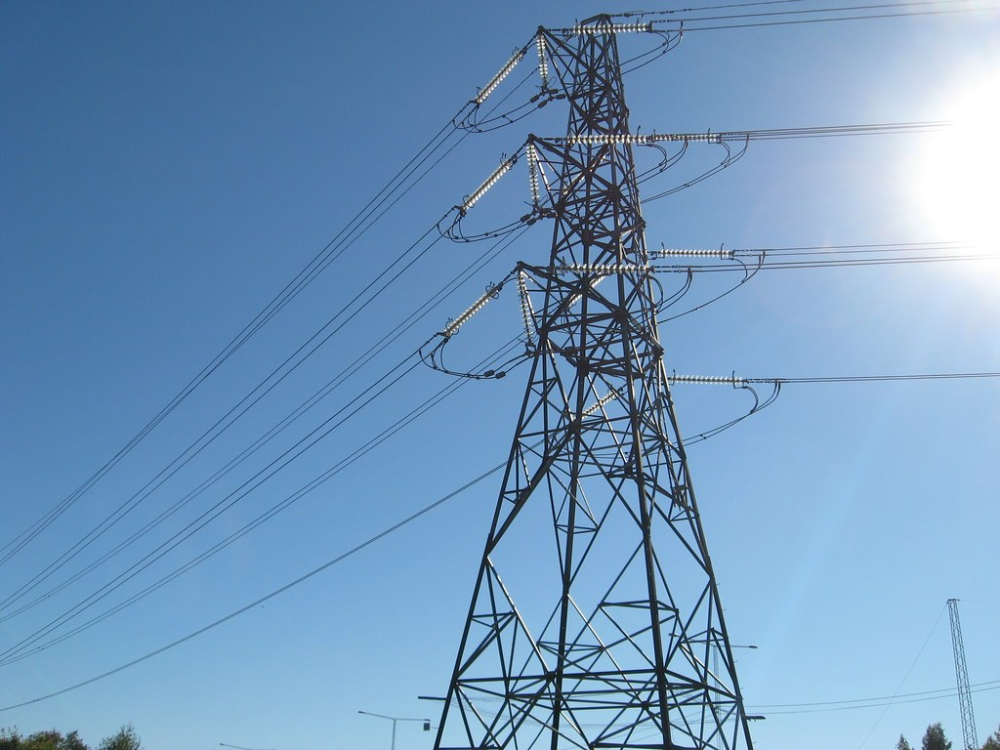
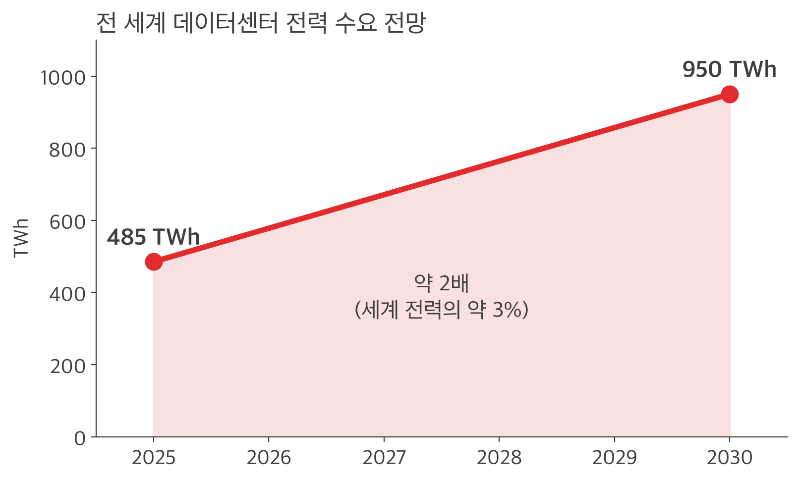
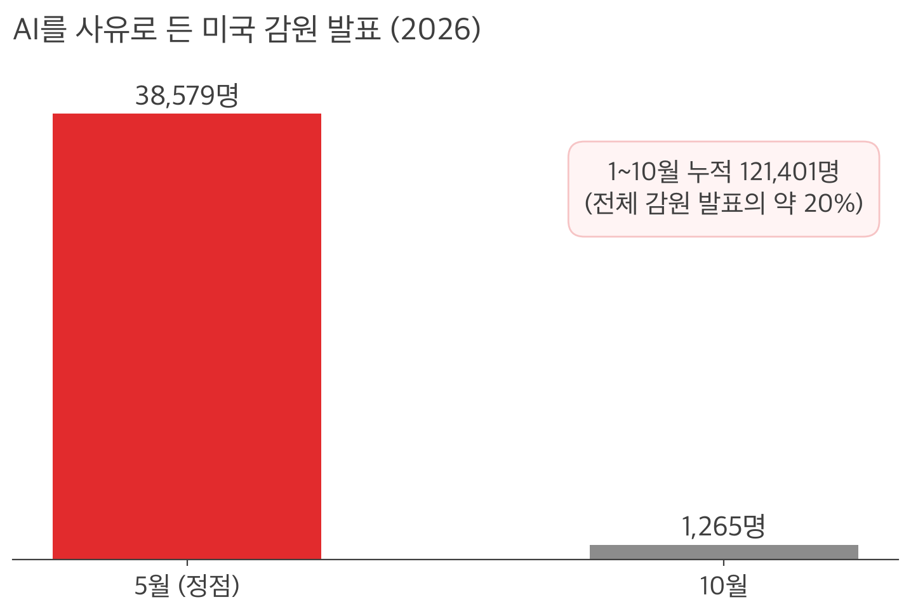
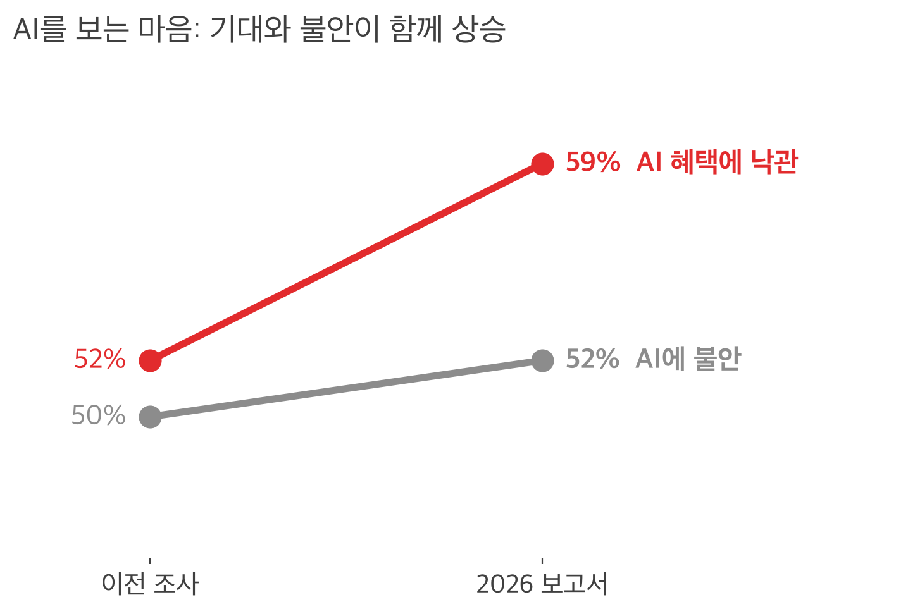

03 파트 3
2026 AI 트렌드 — 말하는 AI에서 일하는 AI로
돈·전기·규칙·일자리
— 그리고 한국
직장인을 위한 3시간 교육 발표 · 파트 3 · 기준일 2026.11.14 · 발표 : ○○○

CONTENTS
돈·전기·규칙
·일자리

이 파트의 목표
목표 1
AI 투자와 매출의 격차, 전력·칩 병목을 그래프로 읽기
목표 2
2026년 규제 일정과 직장인이 지킬 것, 일자리 변화의 모양 말하기
여는 질문
우리 회사의 AI 예산,
올해 늘었나요?
그 돈으로 무엇이 좋아졌나요?
쏟아지는 돈
2025년 기업 AI 투자, 1년 만에 2배 이상

출처: Stanford HAI, 2026 AI Index · [공식] · 2024 값은 증가율로 역산
- 2025 전 세계 기업 AI 투자, +130%
- 민간 투자 3,447억 달러, +127.5%
- 미국 2,859억 vs 중국 124억 달러
쏟아지는 돈
빅테크의 설비투자: 데이터센터를 짓는 돈

출처: SK텔레콤 뉴스룸 「2026 상반기 AI 트렌드 결산」 · [보도] · 2025 값은 증가율로 역산
- 알파벳·아마존·MS·메타 2026 설비투자 약 7,250억 달러 (+77%)
- 그중 약 75%가 AI 연산 설비
- 대형 클라우드 6사 AI 지출 8,500억 달러 이상 전망 보도
- AI 설비투자 = 미국 GDP의 약 0.8% 보도
거품인가?
[비유] 저울

사진: winnifredxoxo / CC BY 2.0
저울 = AI 산업의 수지
- 왼쪽 접시 = 들어가는 돈 (데이터센터·칩)
- 오른쪽 접시 = 들어오는 돈 (구독·API 매출)
- 지금은 왼쪽이 훨씬 무거운 상태
- 거품 논쟁 = 오른쪽이 따라잡을 수 있는가
거품인가?
들어가는 돈 vs 들어오는 돈
거품인가?
강세론 vs 약세론
| 강세론: "진짜 수요" | 약세론: "너무 앞선 투자" |
|---|---|
| 선두 기업 매출이 유례없이 빠르게 증가 | AI 기업 연 매출 합계 1,500억 달러 미만 추정 vs 설비투자 연 1조 달러 근처 |
| 미국 사용자당 생성형 AI 가치 1년 새 3배 공식 | 칩 회사가 고객에 투자하고, 고객이 다시 칩을 사는 "순환 투자" |
| 사용(추론) 수요가 AI 연산의 약 3분의 2 | 매출 대비 기업가치 40배 수준이라는 분석 |
- 11월: AI 인프라 지출 우려로 미국 기술주 급락, 나스닥 2025년 3월 이후 최악의 월간 하락 보도
- 앤트로픽 상장 추진, 시장 상황에 맞춰 기업가치 눈높이 조정 보도 보도
출처: 블룸버그·업계 분석 종합(2026.11), Deloitte TMT 2026, Stanford AI Index · [보도] · 매출·기업가치 수치는 기준(연환산, 총·순매출)이 달라 참고용
거품인가?
직장인 버전: 우리 회사 AI 예산을 판단하는 3가지 질문
질문 1
측정 가능한 효과
시간·비용·오류율 중 무엇이 얼마나 줄었나
예: 보고서 작성 4시간 → 1시간
질문 2
사용량 비용
쓸수록 늘어나는 비용(토큰·좌석)의 상한은 있나
예: 1인당 하루 AI 예산 한도
질문 3
대체 가능성
더 싼 모델·오픈 모델로 바꿔도 되나, 데이터는 옮길 수 있나
예: 특정 회사 종속 피하기
2분 토론: 우리 팀 AI 도구 하나를 세 질문으로 채점
전기와 칩
[비유] 전기를 많이 먹는 공장

사진: Cory M. Grenier / CC BY-SA 2.0
데이터센터 = AI 공장
- 서버 수만 대가 밤낮없이 계산
- 계산 = 전기 + 열

사진: liftarn / CC BY-SA 2.0
송전탑 = 공장의 생명선
- 좋은 기계도 전기가 없으면 정지
- 발전소·전력망은 짓는 데 수년
전기와 칩
데이터센터 전력, 5년 만에 약 2배

출처: IEA, Key Questions on Energy and AI (2026) · [공식] · 두 시점을 이은 선
- 2025 데이터센터 전력 수요 +17%, AI 데이터센터 +50%
- 2030년 세계 전력의 약 3%
- AI 데이터센터 전력 용량 29.6GW 공식
- 미국 전력망 5년간 166GW 추가 필요, 절반 이상 데이터센터 보도
전기와 칩
칩·메모리·전력: 셋 중 하나만 막혀도 정체
규칙이 생기다
[비유] 자동차 안전벨트
사진: ToddMcCann / CC BY 2.0
안전벨트·번호판 = AI 규제
- 차를 못 타게 하는 장치가 아닌 다치지 않게 하는 장치
- 번호판 = "누가 만들었나" 표시 (AI 생성물 표시)
- 위험한 도로일수록 규칙이 촘촘 (고위험 AI)
- 2026 = 안전벨트 착용 의무가 시작된 해
규칙이 생기다
AI 규칙의 시간표: 2026.1 → 2028.8
규칙이 생기다
세 지역의 서로 다른 접근
| 지역 | 접근 | 2026년에 시작된 것 | 앞으로 |
|---|---|---|---|
| EU | 위험 기반 규제 (위험할수록 의무 강화) | 8.2 투명성 의무, 범용 AI 모델 의무·AI 사무국 집행 | 고위험 2027.12 / 2028.8 |
| 한국 | 진흥 + 최소 규제 (AI 기본법) | 1.22 시행: 고영향·생성형 AI 사전 고지·표시 의무 | 과태료 최소 1년 이상 유예 |
| 미국 | 연방 단일 법 없음, 주 단위 | 캘리포니아 투명성법(1.1), 콜로라도 AI법(6.30) | 주별로 다른 규칙 |
출처: EU 관보·법률사무소 해설(Jones Walker, Orrick), 법률신문·뉴스1(AI 기본법), 업계 정리 · [공식]·[보도]
규칙이 생기다
법정과 국제 무대에서 일어난 일
미성년자 보호
1월 Character.AI·구글 소송 합의, 6월 미국 플로리다주가 오픈AI 상대 첫 주(州) 소송
딥페이크
1월 그록의 비동의 성적 이미지 생성 → 인도네시아·말레이시아·필리핀 접속 차단 후 해제
저작권
11월 초 언론사들의 AI 스크래핑 소송 보도, 10월 말 AI 대기업 4곳이 공통 "학습 거부 신호" 지원
국제 협력
2월 인도 AI 영향 정상회의(글로벌 사우스 최초), 유엔 AI 국제 과학 패널 40명 임명
출처: Wikipedia 「2026 in artificial intelligence」(사실 확인 진행 중 표시), 업계 뉴스 종합 · [보도]
규칙이 생기다
직장인이 지킬 것 3가지
01
AI 생성물 표시
고객에게 나가는 이미지·글·음성이 AI로 만든 것이면 표시
EU 투명성 의무, 한국 AI 기본법 표시 의무와 같은 방향
02
입력 금지 목록
개인정보, 고객 데이터, 영업비밀, 미공개 재무 정보는 승인된 도구에만
"넣은 정보는 남는다"고 가정
03
사전 고지
AI가 응대·판단하는 서비스면 이용자에게 미리 알림
AI 기본법 사전 고지 의무의 업무상 의미
일자리와 배움
[비유] 사다리
사진: Lieutenant Pol / CC BY 2.0
사다리 = 커리어
- 첫 칸 = 신입이 배우며 하던 단순 업무
- AI가 그 단순 업무를 먼저 가져감
- 위 칸은 그대로인데 첫 칸이 얇아짐
- 첫 칸 없이는 위로 올라가기 어려움
일자리와 배움
대량 실업보다 "첫 계단"이 먼저 흔들림
일자리와 배움
"AI 때문"이라고 밝힌 감원, 그리고 반론

출처: Challenger, Gray & Christmas (2026.1~10, 미국) · [보도]
반론도 함께
- 경제 전체 실업률 기여 약 0.15%p 추정
- "AI 때문"이 재무 사정을 가리는 표현일 때도
- 감원 발표 ≠ 실제 AI 대체
일자리와 배움
직무별 영향 지도: 대체 / 보조 / 새로 생김
| 직무 | 대체되는 업무 | AI가 보조하는 업무 | 새로 생기는 업무 |
|---|---|---|---|
| 기획 | 자료 조사 초안, 회의록 | 시나리오 비교, 보고서 구성 | AI 결과 검증·출처 확인 |
| 영업·마케팅 | 제안서 기본안, 광고 문구 변형 | 고객 분석, 개인화 메시지 | AI 생성물 표시·브랜드 관리 |
| 인사 | 공고문, 1차 서류 분류 보조 | 교육 콘텐츠, 면담 준비 | AI 활용 역량 교육·평가 |
| 재무 | 정형 보고서 작성 | 이상 거래 탐지, 예측 | AI 비용(사용량) 관리 |
| 고객지원 | 반복 문의 응대 | 상담 요약, 답변 추천 | 에이전트 권한·예외 처리 설계 |
강의자 정리 (특정 조사 결과 아님) · 근거 흐름: 신입 채용 감소, 고객지원 직군 패턴(AI 인덱스 [공식])
일자리와 배움
배우는 사람과 바라보는 마음

출처: Stanford HAI, 2026 AI Index · [공식]
- 미국 고등·대학생 5명 중 4명 학업에 AI 사용
- AI 정책이 명확하다는 교사 6%
- 기대와 불안이 함께 상승
3분 토론
신입이 AI 시대에 "첫 계단"을 만들려면?
회사 입장 / 개인 입장
한국의 AI
제도 · 모델 · 인프라 · 이용
제도
AI 기본법 2026.1.22 시행, 과태료 최소 1년 이상 유예 보도
모델
독자 AI 파운데이션 모델 1차 평가(1.15): LG AI연구원·SK텔레콤·업스테이지 통과 공식
배점 = 벤치마크 40 + 전문가 35 + 사용자 25
인프라
SK, 울산 1GW급 AI 데이터센터부터 2029년 5GW, 이후 15GW 계획 보도
이용
생산가능인구 40.6% 사용(세계 12위), 설문 이용 경험 85% 보도
2027을 내다보며
지켜볼 5가지 + 나를 위한 AI 리터러시 5원칙
2027 체크리스트
- 에이전트: 하루(8시간) 업무를 맡길 수 있나
- 돈: 매출이 설비투자를 따라잡나
- 전기: 전력이 병목이 되나
- 규칙: EU 고위험(2027.12), 한국 유예 종료
- 일자리: 신입 채용이 회복되나
AI 리터러시 5원칙
- 출처 확인: 공식·보도·주장 구분
- 권한 최소화: 필요한 열쇠만
- 검증 습관: 숫자·인용·코드 재확인
- 개인정보 주의: 넣은 정보는 남음
- 매일 조금씩: 일 하나를 AI와 함께
2027을 내다보며
활동: 다음 주 월요일에 해 볼 AI 업무 1가지
나의 월요일 AI 카드
정리
말하는 AI에서 일하는 AI로 — 그리고 그 비용
파트 3 핵심 4줄
- 돈: 투자 급증, 매출이 따라잡는지가 거품 논쟁의 핵심
- 전기: 데이터센터 전력 2030년까지 약 2배 전망
- 규칙: 2026 = 투명성 의무 시작의 해
- 일자리: 해고보다 신입 채용 감소가 먼저
이미지·자료 출처
사진 (Openverse 검색, CC 라이선스) · 데이터
- balance scale — winnifredxoxo, CC BY 2.0, flickr
- Data Center — Cory M. Grenier, CC BY-SA 2.0, flickr
- Power lines — liftarn, CC BY-SA 2.0, flickr
- Seat belt lock — ToddMcCann, CC BY 2.0, flickr
- ladder — Lieutenant Pol, CC BY 2.0, flickr
- 데이터: Stanford HAI 2026 AI Index [공식] · IEA Key Questions on Energy and AI 2026 [공식] · SK텔레콤 뉴스룸 2026 상반기 결산 [보도] · Challenger, Gray & Christmas [보도] · EU AI Act·디지털 옴니버스 해설(Jones Walker, Orrick) · 정책브리핑(독자 AI 1차 평가) [공식] · 법률신문·뉴스1(AI 기본법) [보도] · ZDNet Korea(이용률) [보도] · Wikipedia 2026 in AI [보도]
- 그래프·애니메이션 — matplotlib, manim으로 직접 제작